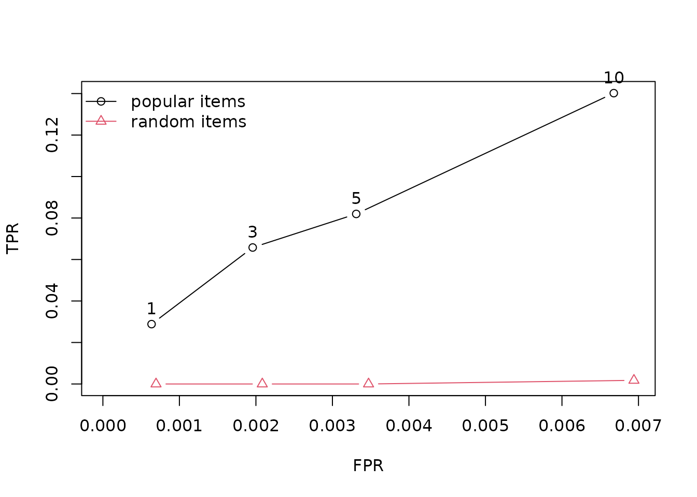

Getting started with recommenderlab
Michael Hahsler
Source:vignettes/recommenderlab.Rmd
recommenderlab.Rmdrecommenderlab provides tools for representing user–item
data, fitting recommendation algorithms, producing recommendations, and
evaluating their quality. This vignette walks through that workflow
using the package’s bundled MovieLense ratings data.
Installation
Install the released package from CRAN, then load it in your R session:
install.packages("recommenderlab")The SVD and LIBMF recommenders require the optional packages
irlba and recosystem, respectively. Install
them if you plan to use those methods:
install.packages(c("irlba", "recosystem"))Load and prepare ratings
The MovieLense data contains ratings on a
one-to-five-star scale. It is stored as a sparse
realRatingMatrix: users are rows, movies are columns, and
missing ratings are not stored as zeros. We select users who rated more
than 100 movies to give the recommendation algorithms enough information
to work with.
data("MovieLense")
MovieLense
#> 943 x 1664 rating matrix of class 'realRatingMatrix' with 99392 ratings.
MovieLense100 <- MovieLense[rowCounts(MovieLense) > 100, ]
MovieLense100
#> 358 x 1664 rating matrix of class 'realRatingMatrix' with 73610 ratings.Basic summaries help describe the data before modeling. For example,
rowCounts() counts ratings per user, and
getRatings() extracts the observed rating values.
summary(rowCounts(MovieLense100))
#> Min. 1st Qu. Median Mean 3rd Qu. Max.
#> 101.0 134.0 180.5 205.6 251.0 735.0
summary(getRatings(MovieLense100))
#> Min. 1st Qu. Median Mean 3rd Qu. Max.
#> 1.000 3.000 4.000 3.493 4.000 5.000Fit a recommender and make recommendations
Recommender() learns a model from a training rating
matrix. Here we fit user-based collaborative filtering (UBCF) on the
first 300 selected users. predict() then produces a
top-five list for two other users. The default output is a
topNList; coerce it to a list to see the recommended movie
titles.
train <- MovieLense100[1:300, ]
rec <- Recommender(train, method = "UBCF")
rec
#> Recommender of type 'UBCF' for 'realRatingMatrix'
#> learned using 300 users.
recommendations <- predict(rec, MovieLense100[301:302, ], n = 5)
recommendations
#> Recommendations as 'topNList' with n = 5 for 2 users.
as(recommendations, "list")
#> $`0`
#> [1] "Amistad (1997)" "Kama Sutra: A Tale of Love (1996)"
#> [3] "Farewell My Concubine (1993)" "Roommates (1995)"
#> [5] "Fresh (1994)"
#>
#> $`1`
#> [1] "Bitter Moon (1992)" "Touch of Evil (1958)"
#> [3] "Braindead (1992)" "Great Dictator, The (1940)"
#> [5] "M (1931)"The package also supports predicted ratings. Request
type = "ratings" when the numeric estimates are more useful
than a ranked list.
predicted_ratings <- predict(
rec,
MovieLense100[301:302, ],
type = "ratings"
)
as(predicted_ratings, "matrix")[, 1:6]
#> Toy Story (1995) GoldenEye (1995) Four Rooms (1995) Get Shorty (1995)
#> 798 NA NA 3.074900 3.679378
#> 804 NA NA 3.302592 NA
#> Copycat (1995) Shanghai Triad (Yao a yao yao dao waipo qiao) (1995)
#> 798 3.339132 NA
#> 804 3.450267 4.062663Evaluate recommendations
Evaluation should simulate the information available when
recommendations are made. An all-but-five scheme withholds five ratings
per user and uses the remaining ratings as known input. Here, ratings of
four stars or higher count as positive feedback.
evaluationScheme() supports train/test splits,
cross-validation, and bootstrap evaluation.
evaluation_data <- MovieLense100[1:200, ]
scheme <- evaluationScheme(
evaluation_data,
method = "cross-validation",
k = 5,
given = -5,
goodRating = 4
)
scheme
#> Evaluation scheme using all-but-5 items
#> Method: 'cross-validation' with 5 run(s).
#> Good ratings: >=4.000000
#> Data set: 200 x 1664 rating matrix of class 'realRatingMatrix' with 43480 ratings.Compare a popularity-based recommender with a random baseline.
evaluate() fits each method on every training fold, creates
top-N recommendations, and calculates measures from the withheld
ratings. The resulting true-positive and false-positive rates can be
plotted to compare recommendation list lengths.
algorithms <- list(
`popular items` = list(name = "POPULAR", param = NULL),
`random items` = list(name = "RANDOM", param = NULL)
)
results <- evaluate(
scheme,
algorithms,
type = "topNList",
n = c(1, 3, 5, 10),
progress = FALSE
)
getResults(results[[1]])
#> [[1]]
#> TP FP FN TN N precision recall TPR
#> [1,] 0.125 0.875 2.675 1455.05 1458.725 0.1250 0.03803419 0.03803419
#> [2,] 0.225 2.775 2.575 1453.15 1458.725 0.0750 0.08675214 0.08675214
#> [3,] 0.225 4.775 2.575 1451.15 1458.725 0.0450 0.08675214 0.08675214
#> [4,] 0.375 9.625 2.425 1446.30 1458.725 0.0375 0.14529915 0.14529915
#> FPR n
#> [1,] 0.0006027526 1
#> [2,] 0.0019116903 3
#> [3,] 0.0032925386 5
#> [4,] 0.0066438093 10
#>
#> [[2]]
#> TP FP FN TN N precision recall TPR
#> [1,] 0.050 0.950 2.575 1424.225 1427.8 0.05000000 0.03289474 0.03289474
#> [2,] 0.125 2.875 2.500 1422.300 1427.8 0.04166667 0.05657895 0.05657895
#> [3,] 0.175 4.825 2.450 1420.350 1427.8 0.03500000 0.07850877 0.07850877
#> [4,] 0.275 9.725 2.350 1415.450 1427.8 0.02750000 0.12675439 0.12675439
#> FPR n
#> [1,] 0.0006735972 1
#> [2,] 0.0020360038 3
#> [3,] 0.0034190237 5
#> [4,] 0.0068888649 10
#>
#> [[3]]
#> TP FP FN TN N precision recall TPR
#> [1,] 0.050 0.950 2.925 1447.050 1450.975 0.05000000 0.01495726 0.01495726
#> [2,] 0.175 2.825 2.800 1445.175 1450.975 0.05833333 0.05427350 0.05427350
#> [3,] 0.275 4.725 2.700 1443.275 1450.975 0.05500000 0.07948718 0.07948718
#> [4,] 0.475 9.525 2.500 1438.475 1450.975 0.04750000 0.14188034 0.14188034
#> FPR n
#> [1,] 0.0006541728 1
#> [2,] 0.0019504465 3
#> [3,] 0.0032661707 5
#> [4,] 0.0066078496 10
#>
#> [[4]]
#> TP FP FN TN N precision recall TPR
#> [1,] 0.100 0.900 2.575 1456.050 1459.625 0.10000000 0.03468468 0.03468468
#> [2,] 0.175 2.825 2.500 1454.125 1459.625 0.05833333 0.05720721 0.05720721
#> [3,] 0.175 4.825 2.500 1452.125 1459.625 0.03500000 0.05720721 0.05720721
#> [4,] 0.325 9.675 2.350 1447.275 1459.625 0.03250000 0.12477477 0.12477477
#> FPR n
#> [1,] 0.0006188604 1
#> [2,] 0.0019473459 3
#> [3,] 0.0033255932 5
#> [4,] 0.0066688518 10
#>
#> [[5]]
#> TP FP FN TN N precision recall TPR
#> [1,] 0.075 0.925 2.575 1457.300 1460.875 0.07500000 0.02368421 0.02368421
#> [2,] 0.175 2.825 2.475 1455.400 1460.875 0.05833333 0.07412281 0.07412281
#> [3,] 0.275 4.725 2.375 1453.500 1460.875 0.05500000 0.10789474 0.10789474
#> [4,] 0.450 9.550 2.200 1448.675 1460.875 0.04500000 0.16228070 0.16228070
#> FPR n
#> [1,] 0.0006318842 1
#> [2,] 0.0019438412 3
#> [3,] 0.0032523018 5
#> [4,] 0.0065763470 10Plot the average true-positive rate against the false-positive rate for each recommendation list length:
plot(results, annotate = TRUE, legend = "topleft")
For predicted ratings, evaluate() can instead report
rating error measures such as RMSE, MSE, and MAE by using
type = "ratings". See ?calcPredictionAccuracy
for the measures available for direct predictions and
?evaluate for details on evaluation results.
Where to go next
The package includes additional algorithms such as item-based
collaborative filtering (IBCF), matrix factorization, association-rule
recommenders, and hybrid recommenders. Use
recommenderRegistry$get_entry_names() to see the methods
available in your installation. The reference manual documents each
algorithm, data class, and evaluation helper.